| Jamie Mallender (2009. - danas) |
|
Jamie Mallender - Glazbeni albumi, promotivni materijali i logotipi
Od 2009. godine radim za glazbenika iz Velike Britanije, Jamiea Mallendera (bendovi: Tony Martin, Ravenlord,
Zenon...) na dizajnu omota za album, promotivnih materijala, itd. Kupite album preko CDBaby trgovine
(MP3 format i CD format):
Jamie Mallender - Return To Bass Jamie Mallender - Tunes from the mothership |
 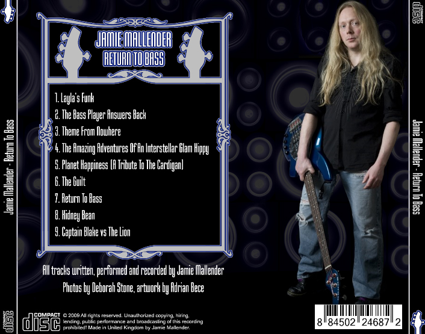
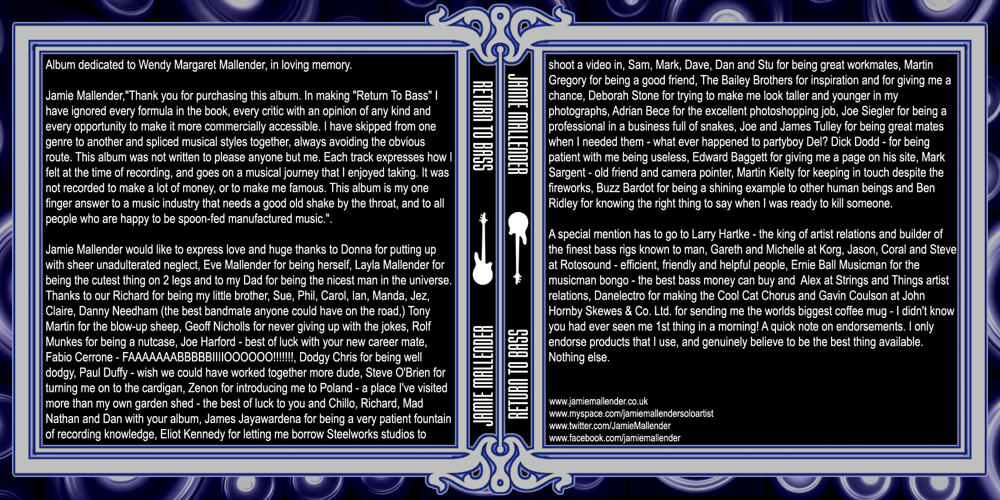
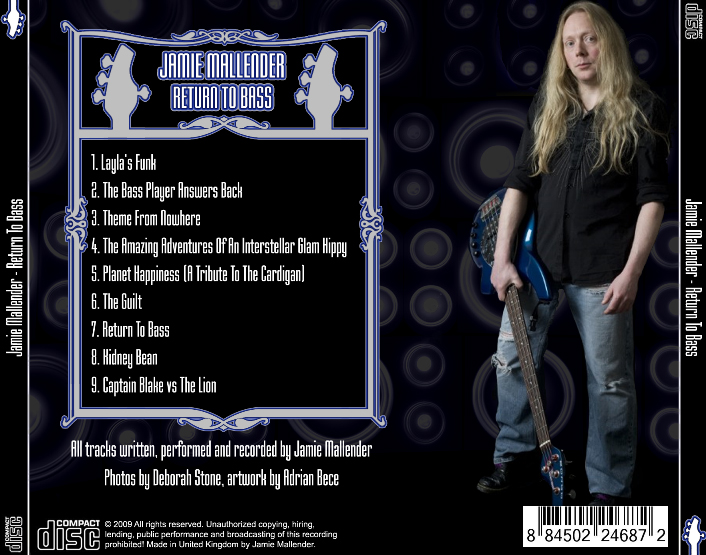
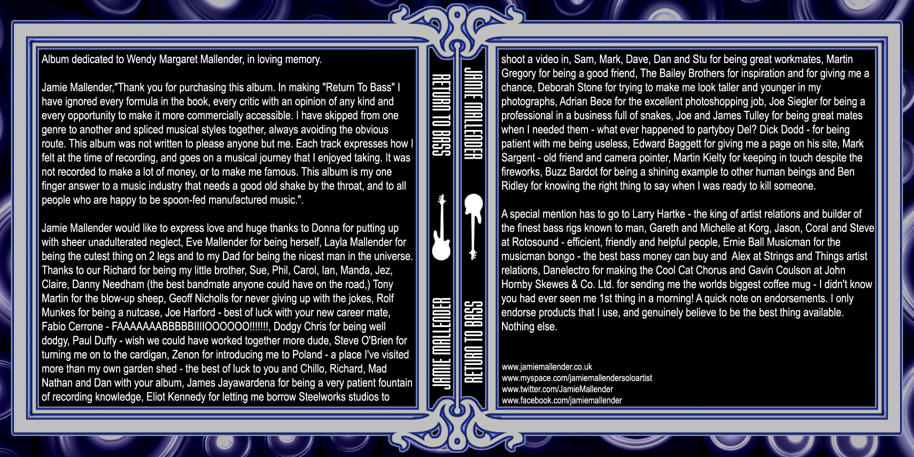
 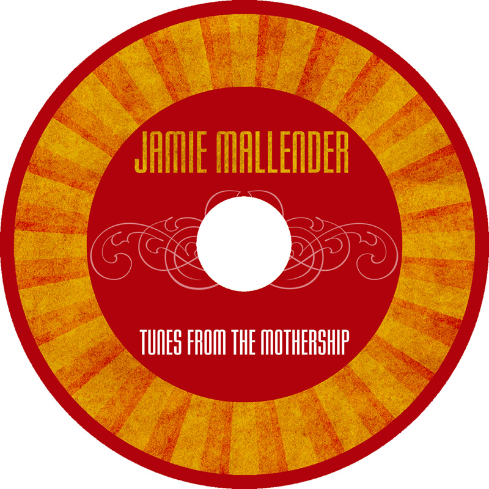
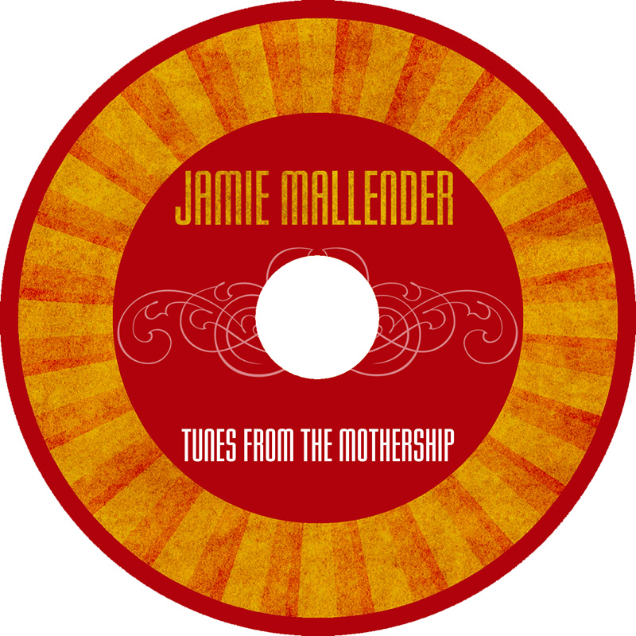
 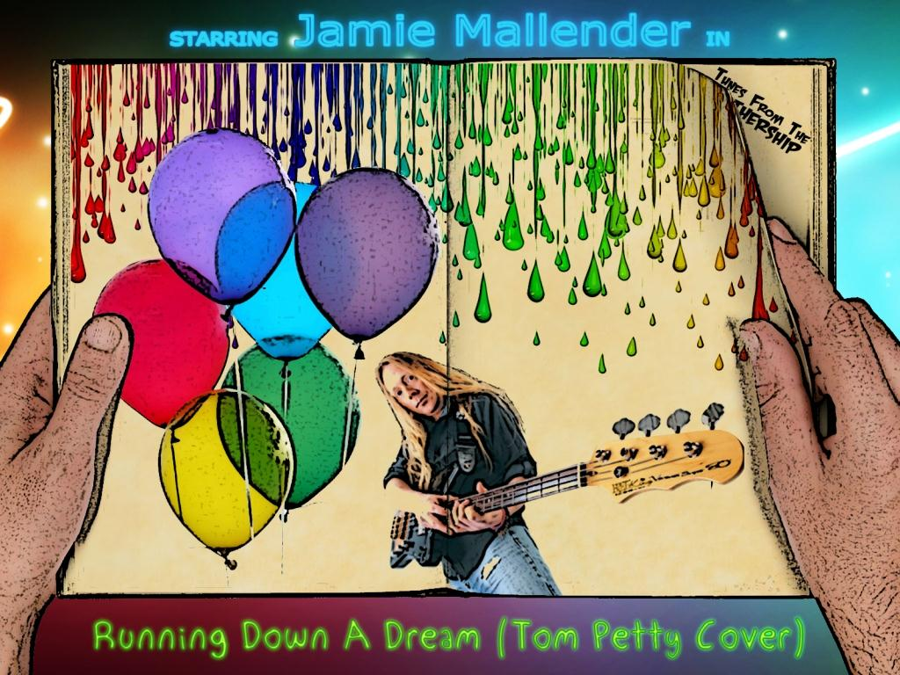
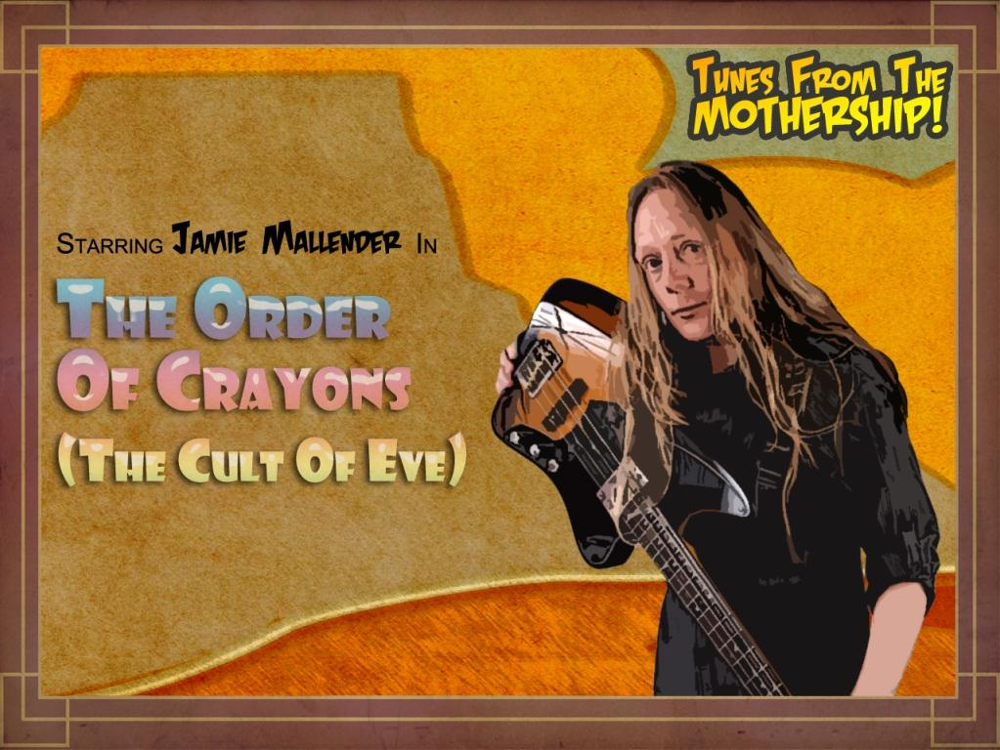
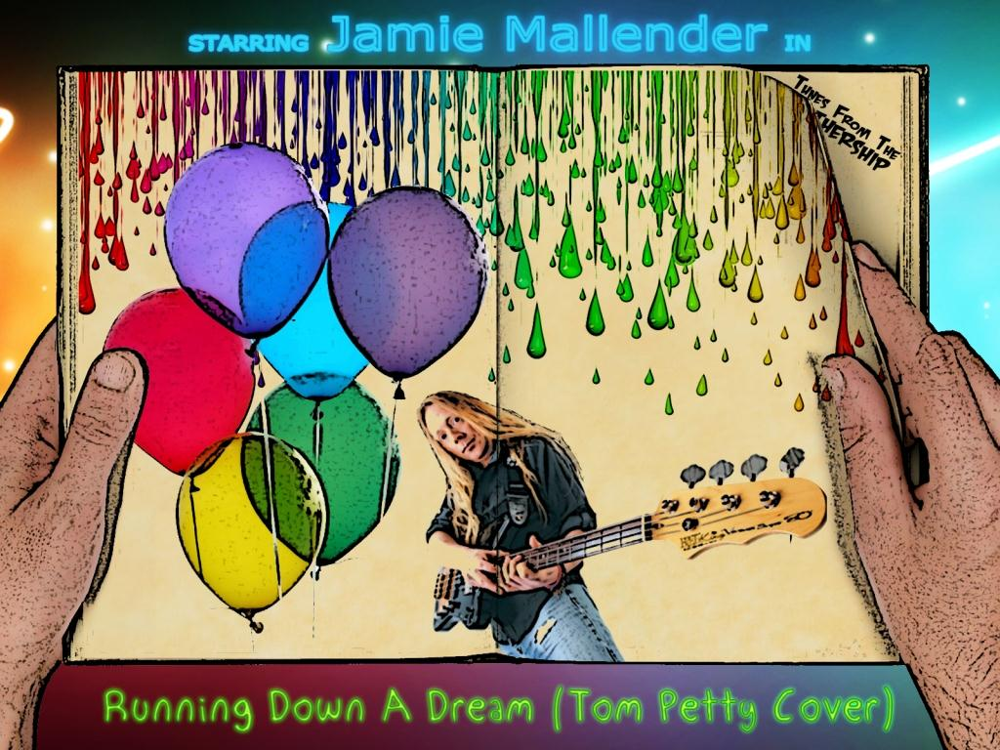
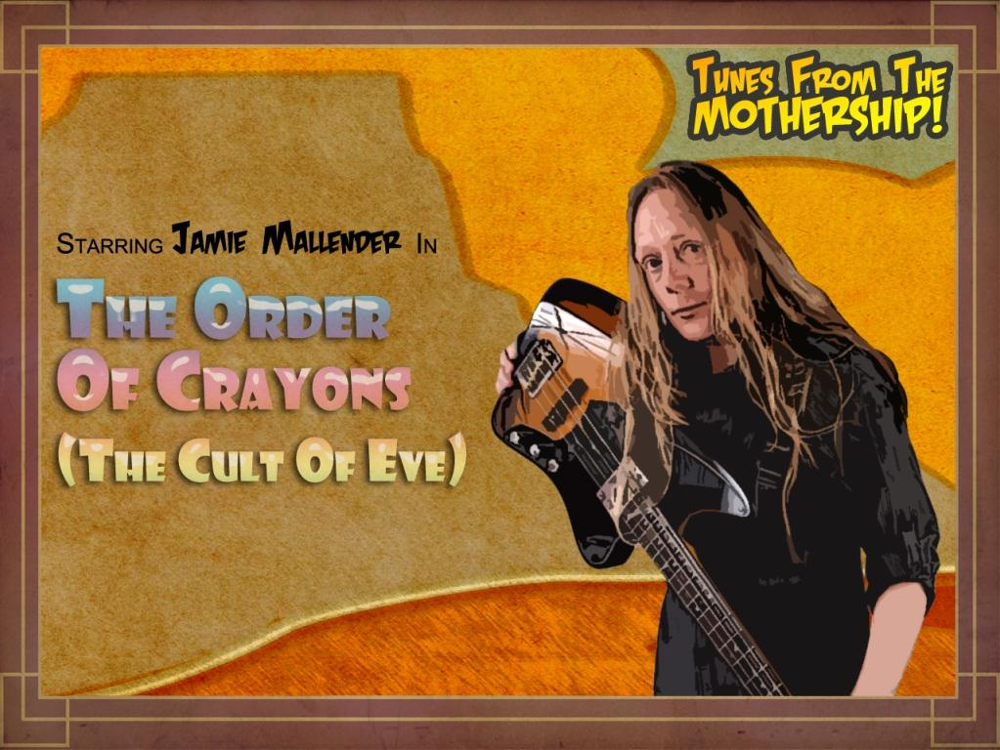

|
| Raven Lord - Black Friar (2013.) |
| Izrađeni glazbeni video sa tekstom koji prati glazbu za internacionalnu super-grupu Raven Lord. |
| Različiti projekti (2010. - 2011.) |
|
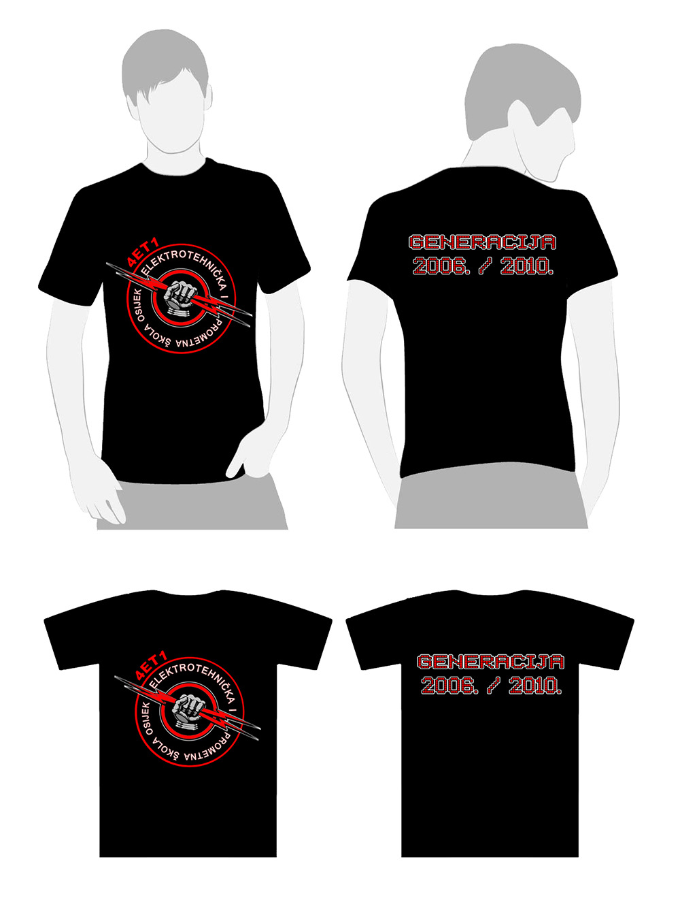
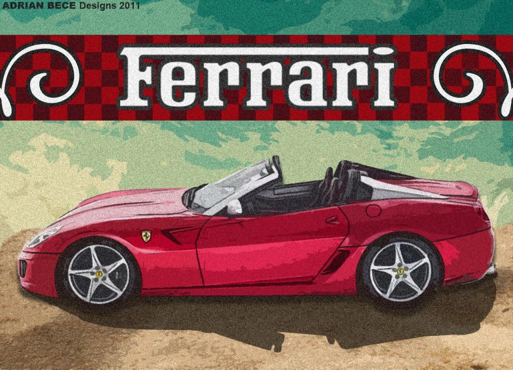
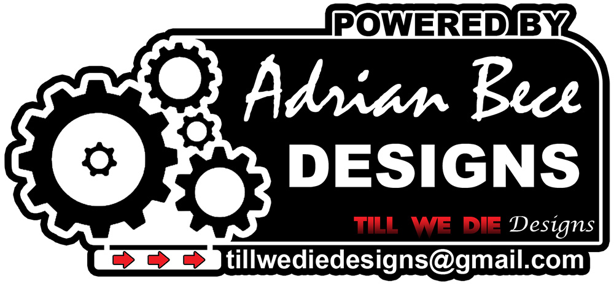
|
| Različiti projekti (2012. - 2014.) |

|